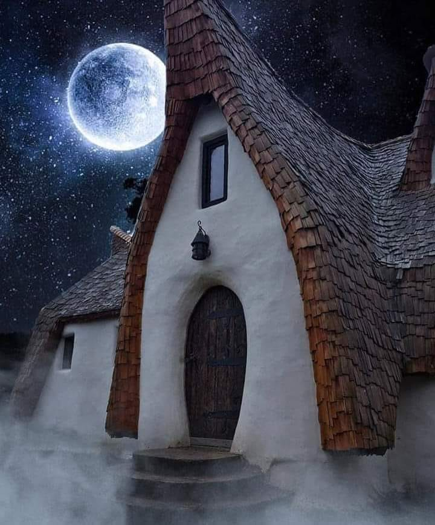

Why Transylvania?
Transylvania is best known as the mysterious land of bloodthirsty vampires and howling wolves. Some may think it’s fictional, but this central Romanian region is a real place. And it’s pretty special, too. Bordered to the east by the Carpathian Mountains, ‘the land beyond the forest’ still feels undiscovered. So, pack your garlic – here’s the lowdown on one of Eastern Europe’s most captivating regions.
Clay Castle
Straight out of a fairy tale, in the heart of Romania, in the Carpathian mountain range, in Transylvania, hides a strange castle. Want to have a hobbit experience? Visit the fairy castle whose exact name is Castelul de lut from the valley of the fairies. Nestled at the bottom of the imposing Fagaras Mountains, the highest mountains of the Southern Carpathians, this castle stands out with its wave-shaped spruce roofs and organic curves, perfectly integrated into the landscape.
Find out more about the Clay Castle